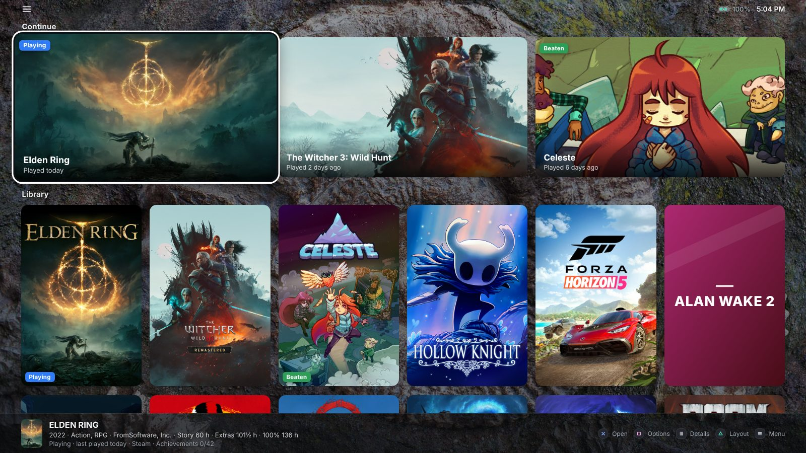
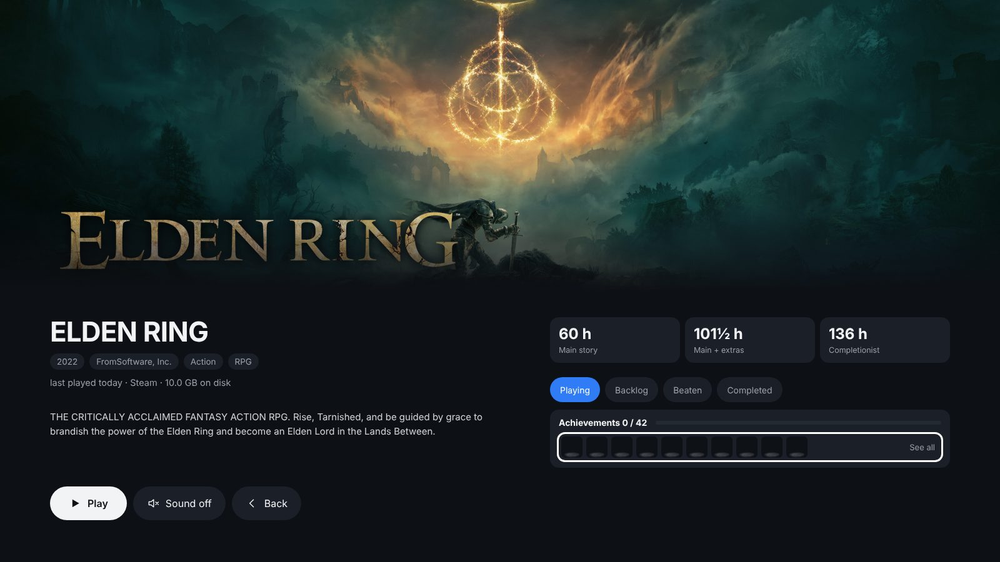
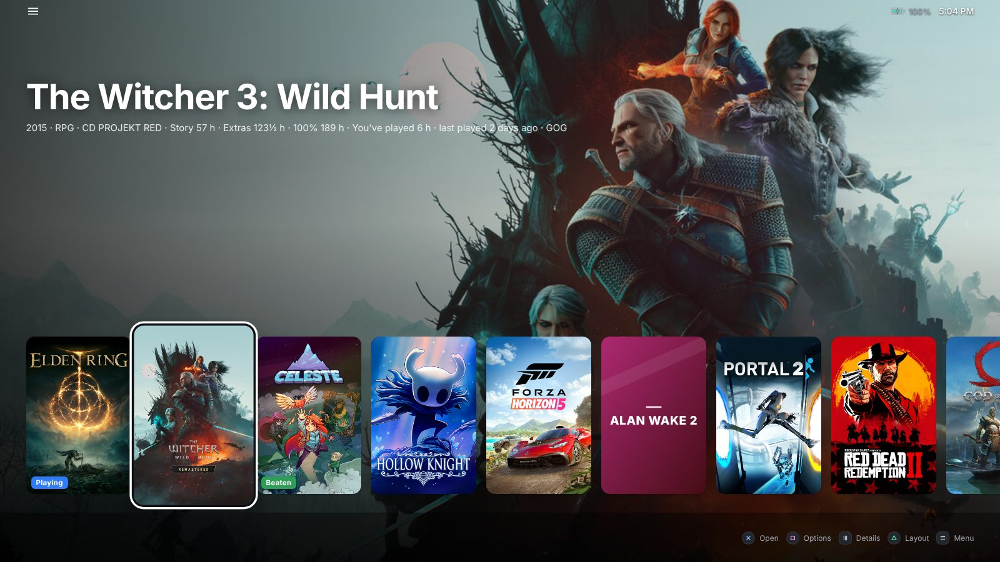
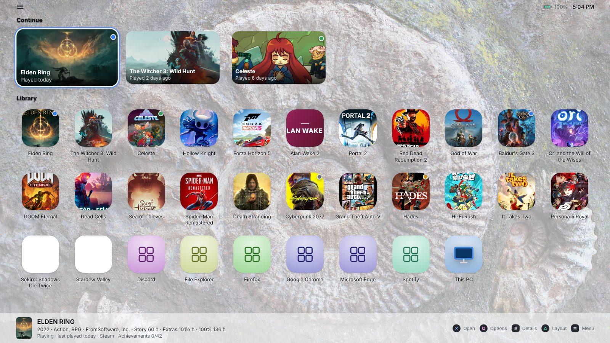
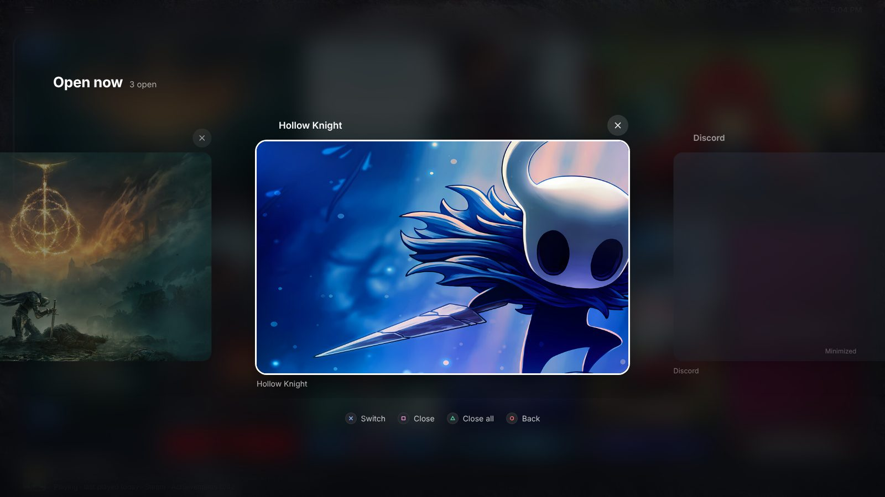
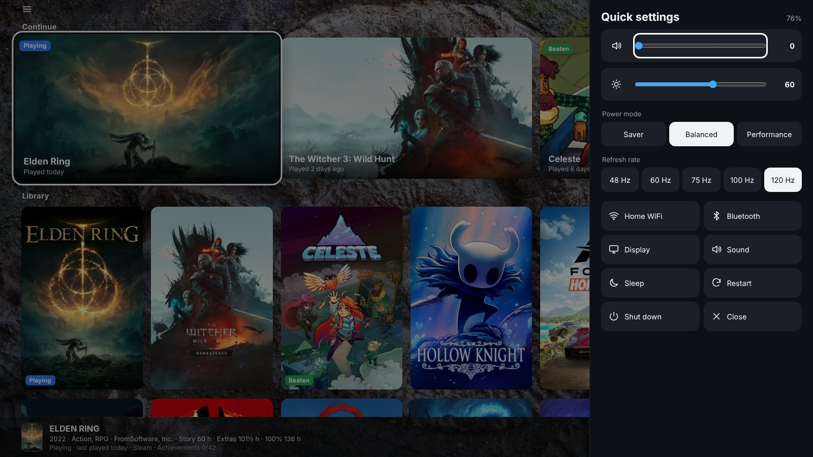
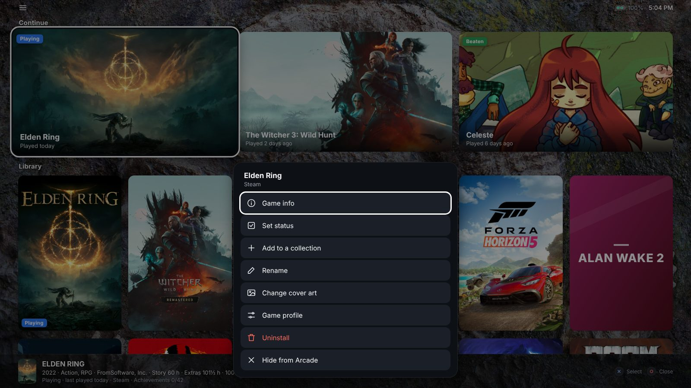
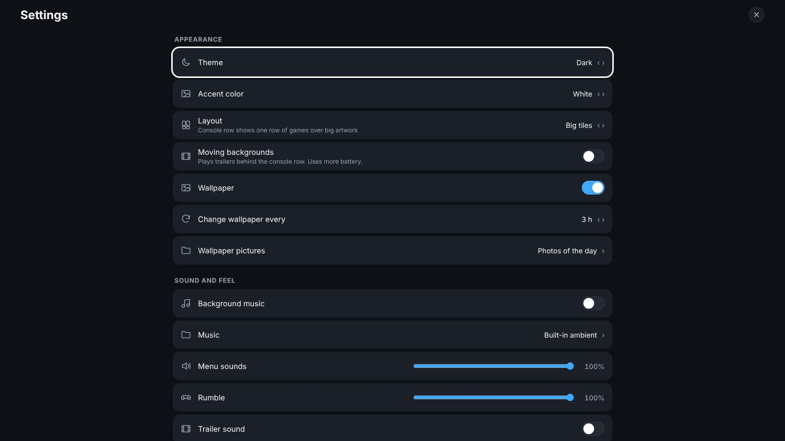
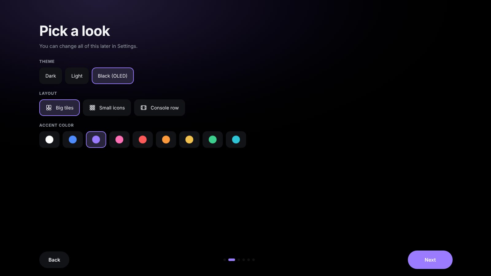
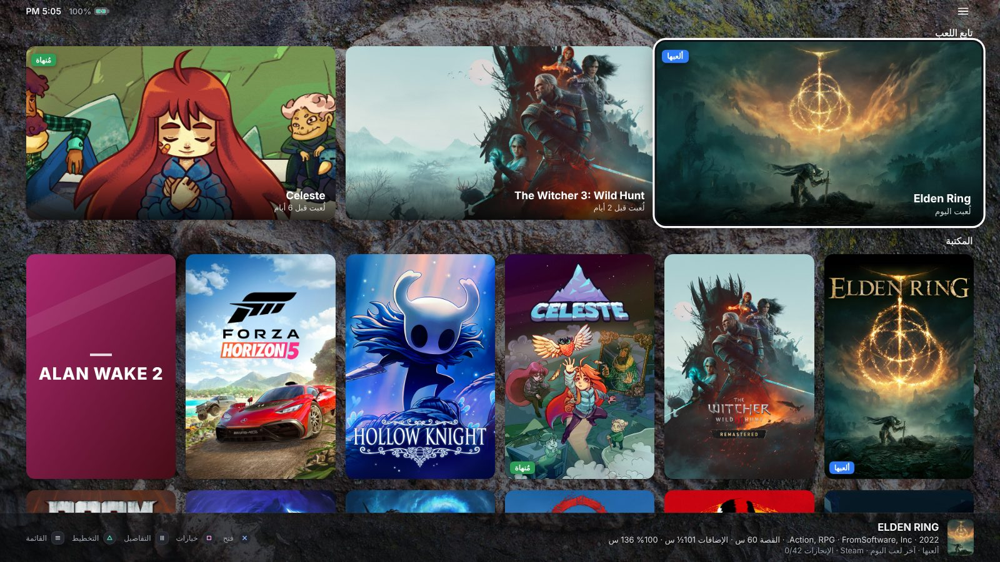

Arcade Launcher is a free, lightweight home screen and game launcher for the ROG Ally, Legion Go, MSI Claw, AYANEO and every other Windows handheld. All your games from every store in one controller-friendly library, with no desktop in sight.
A Steam Big Picture and Playnite alternative that also replaces the Windows desktop, so your handheld boots straight into your games.
Steam, Xbox app and PC Game Pass, Epic, GOG, EA, Ubisoft, Battle.net, itch.io, RetroArch and your own emulators and game folders. No logins.
PlayStation-style prompts, stick scrolling, a soft click and light rumble on every move, an on-screen keyboard and full touch support.
Press Home to come back to Arcade from any game. Press twice to see every open app and switch, like on a phone.
How Long To Beat times, trailers, achievements, playtime, install size and a battery estimate learned from your real sessions.
Refresh rate and power mode switch automatically when a game starts and switch back when you quit. Quick settings are one press away.
Your saves are backed up before and after you play, the last 10 are kept, and restoring takes one press.
Big tiles, phone-style icons or a PS5-style console row. Dark, light and OLED black themes, accent colors, your own wallpapers and music.
Browse, search, copy, move, rename and delete with a controller, so you never need the desktop or File Explorer.
One small program that sits idle while you play. No account, no ads, no tracking.

Your last games sit at the top in a big Continue row, and the library sorts itself.

Press View on any game to see its trailer and everything that helps you decide.
Captured at 1600 × 900. It looks just like this on a 7 to 8.8 inch handheld screen.








Any Windows 10 or 11 PC, tuned for 7 to 8.8 inch handheld screens and built-in controls.
| Button | Action |
|---|---|
| ✕ | Open |
| ○ | Back, or return to the app you came from |
| □ | Options: rename, hide, cover art, collections, game profile, uninstall |
| △ | Switch layout: tiles, icons, console row |
| View | Game info, trailer and achievements |
| Menu | Search, quick settings, settings, filters and sorting |
| L3 / R3 | Quick settings / Search |
| Home | Back to Arcade. Twice: Open now |
Yes. Download it from GitHub and use it on as many PCs as you like.
Yes. It's a full-screen, controller-first library for all your games, and it's also made to replace the Windows desktop on a handheld: it has a file manager, a Home button app switcher, quick settings and per-game power profiles, and it's set up in about a minute without plugins.
Yes. Games from Steam, the Xbox app (PC Game Pass), Epic Games Store, GOG Galaxy, EA app, Ubisoft Connect, Battle.net, itch.io and RetroArch are found automatically, without logging in.
Yes. Turn on Start with Windows. With the Home button feature on, pressing Home takes you back to Arcade instead of the desktop.
No. Arcade sits idle while you play, and its heavier extras (moving trailer backgrounds, Steam friends) are off unless you turn them on.
The app isn't code-signed yet, so SmartScreen warns the first time. Click More info, then Run anyway. Arcade Launcher collects no data, shows no ads and needs no account.
Arcade Launcher is free. Plus is an optional one-time purchase that unlocks a few extras and keeps development going.
The PS5-style layout, with moving trailer backgrounds.
Accent colors, the black OLED theme, your own wallpapers and music.
Refresh rate and power mode per game, plus battery estimates.
See who's online and what they're playing.
Back up everything and restore it on another handheld.
Get Plus inside the app: ☰ › Get Arcade Plus.
Free for Windows 10 and 11. Installer or portable.
Download Arcade Launcher